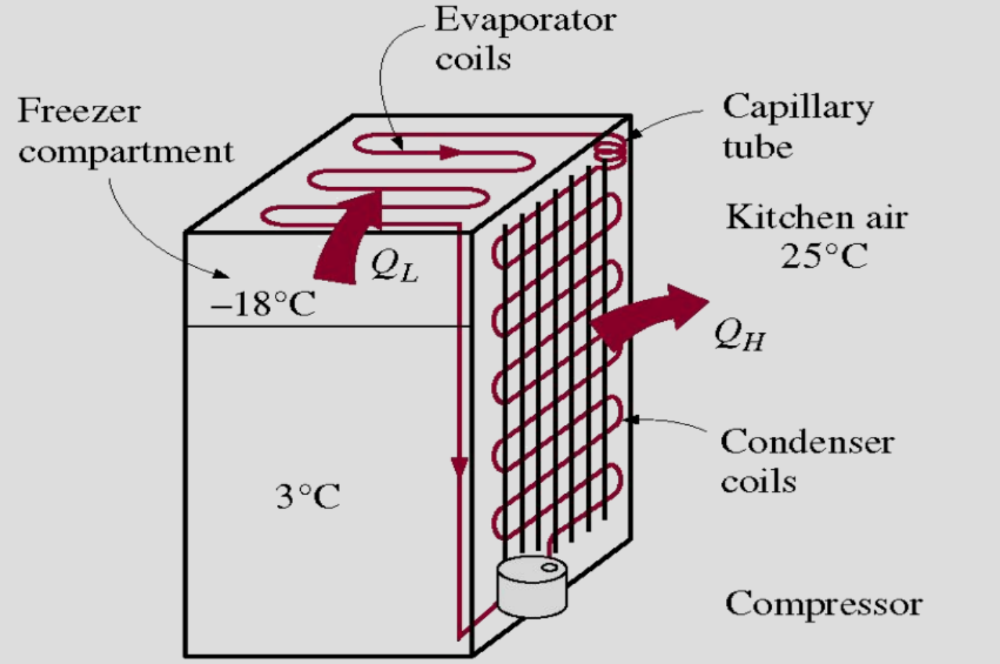
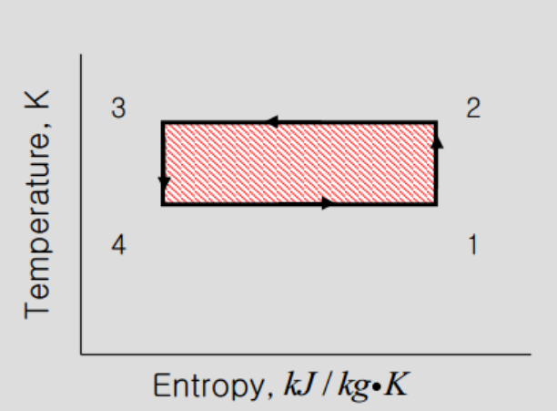
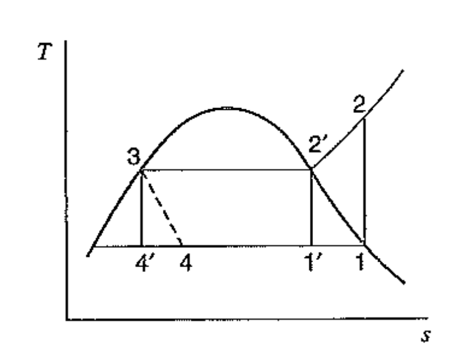

[Thermodynamics] Ch 9. Refrigeration cycle
자 지난 포스터에서 다룬 Steam engine과
정반대인 냉장고 Cycle에 대해서 다뤄보자.
Refrigeration Cycle 의 목적:
온도를 낮추는 것, 열을 빼앗는 것.
실제 냉장,냉동을 보면,

Ql의 열을 빼앗아 냉장,냉동고를 가동시키고
QH라는 열을 밖으로 내뿜는 것을 알 수 있다.
이는 Rankie cycle (heat engine)과 정반대 cycle이다.
밑 사진의 Refrigeration cycle과정을 살펴보면,
정말 Rankie cycle과 반대로 움직이는 것을 볼 수 있다.
![[Thermodynamics] Ch 9. Refrigeration cycle](./images/img-002.png)
따라서, 가장 효율이 좋은 카르노 cycle의 경우
다음과 같은 T-s그래프를 따른다.

이는 당연히 효율이 가장 좋고 이상적인 cycle이고
실제로 Refrigeration cycle은 다르다.
Carnot cycle vs Ideal refrigeration cycle
실제, Turbine에서 밖으로 나오는 일은 매우 작음을 알 수 있다.
이전 포스터에서 액체 즉, incompressible flow에서 specific volume은 매우 작았고,
그렇기 때문에, shaft work도 매우 작음을 펌프에서 확인하였다.
위 Refrigeration cycle에서는 Turbine이 펌프 역할을 하는데,
Output work 가 매우 작기 때문에 설치하는 것이 손해이다.
따라서, 그저 pressure drop을 위한 Expansion valve를
3->4 과정 사이에 달아준다.
![[Thermodynamics] Ch 9. Refrigeration cycle](./images/img-004.png)

Expansion valve는 급격한 팽창으로 인한 압력 감소이기 떄문에,
Irrversible process
따라서,
엔트로피가 증가
하는 것을 확인 할 수 있다. (3 -> 4)
뿐만아니라, Carnot cylcer 처럼 (2' -> 1')과정을 진행할 수 없는게
Compressor의 경우 Vapor only일 경우 효율이 좋기 때문이다.
따라서, Ideal refrigeration cycle 은 최종적으로,
1 -> 2 -> 3 -> 4 과정.
Carnot cycle은
1' -> 2' -> 3 -> 4'
이제 실제와 현실을 비교해보자.
Real vs Ideal refrigeration cycle
![[Thermodynamics] Ch 9. Refrigeration cycle](./images/img-006.png)
자 먼저 1번 State(Superheated vapor)에서 시작해보자.
1 -> 2' 과정에서 일을 받지만, 당연히 ireversible process 일 것이므로,
엔트로피는 증가할 것이다.
2' -> 3 과정에서 파이프 내부 손실로 인해, 압력은 계속 감소하고
3 -> 4 과정 condenser에서 완벽한 saturated liquid 이 아닌 compressed liquid 일 것이다.
4 -> 5 과정에서도 수두손실 -> 압력손실
그리고 7-> 8 과정에서는 압력손실과 더불어, Superheated vapor로 output될 것이다.
Absorption Refrigeration cycle
![[Thermodynamics] Ch 9. Refrigeration cycle](./images/img-007.png)
위 사진은 amonia absorption refrigeration cycle이다.
핵심만 이해하면 된다. 왜 이렇게 복잡하게 만들었을까??
일단, 핵심은 바로
Compressor Work >> Pump Work
(specific volume차이)
Compressor 같은 경우 기체, pump는 액체로 작동하므로 Shaft work가 pump가 덜든다.
따라서, 우리는 pump로 압력을 높여줄 것이다.
그렇다면 유체를 액체로 만들어야하므로,
Amonia와 물을 섞은 Solution을 냉매로 사용한다.
그리고 pump로 Solution을 generator로 옮겨준후,
거기서 열을 가해 Vapor Amonia만 Condenser로 이동시키고,
나머지 Weak Amonia solution은 밑으로 흘려보내주는 시스템이다.
위 그림을 자세히 다시 보면, Qh 이 필요함을 알 수 있다.
따라서, 위 System은 발열이 많은 지역에서 사용하는 냉장시스템이다.